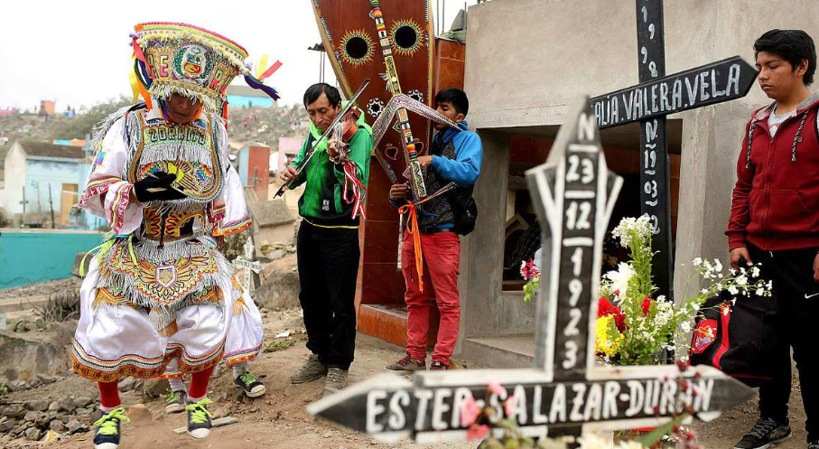

Celebrando la vida y la memoria
El Día de los Muertos es una celebración tradicional mexicana que honra a los seres queridos que han fallecido. Se celebra el 1 y 2 de noviembre y combina elementos indígenas y católicos.
Esta festividad refleja la conexión entre la vida y la muerte, donde se celebra la memoria de los que han partido y se les da la bienvenida a sus almas durante estos días.
